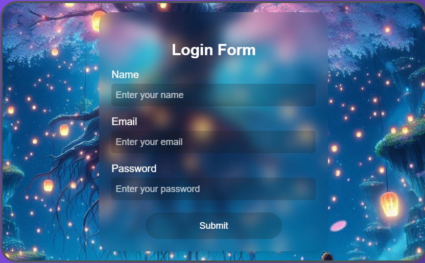
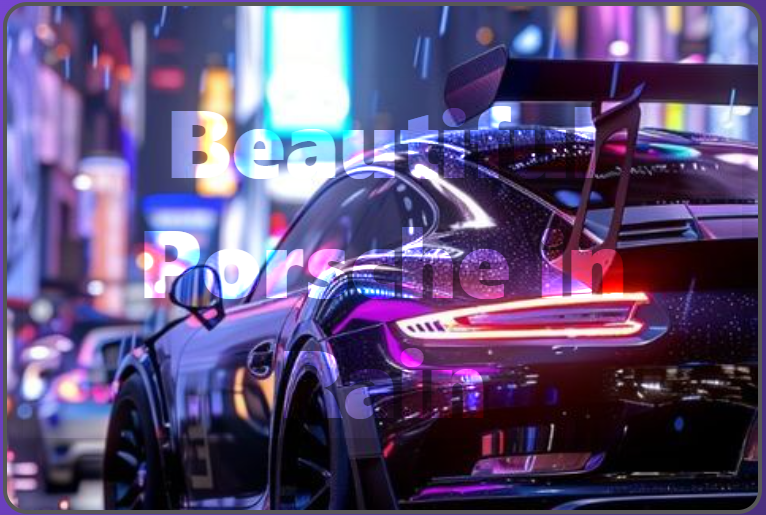
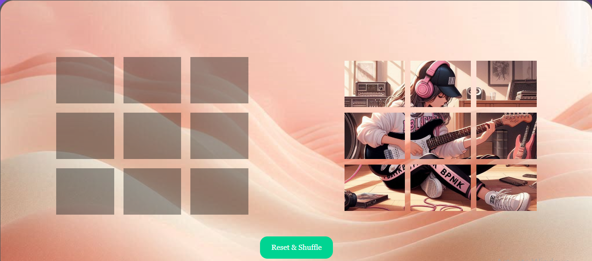
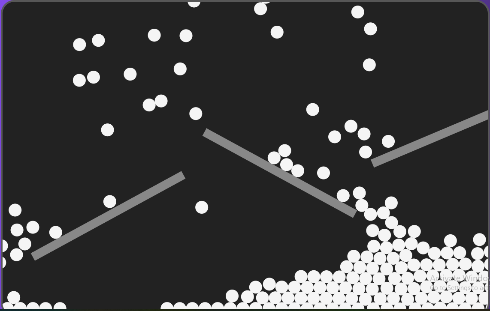
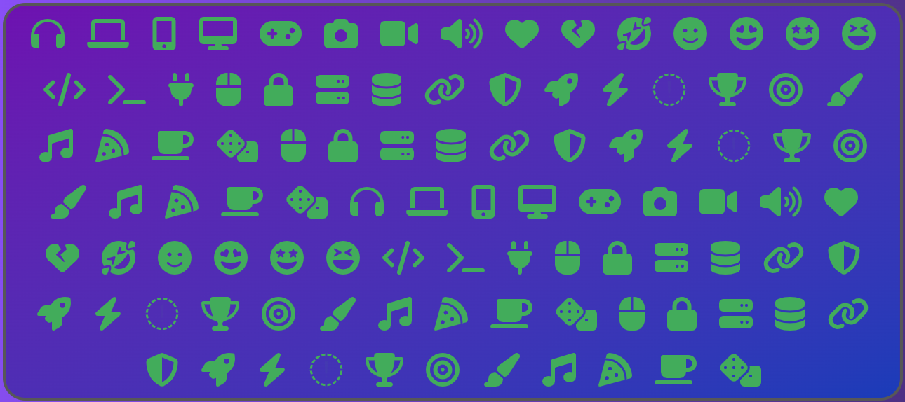

Awesome Web Developers
Modern Glassmorphism Contact Form Using HTML & Tailwind CSS | Stylish Static Form Design
In this guide, you'll learn how to build a beautiful glassmorphism-style login form using HTML, Tailwind CSS, and AOS scroll animation. This modern UI design is not only eye-catching but also responsive and smooth.
Responsive Transparent Text Overlay using Tailwind CSS – With Source Code
Transparent text effects look stylish and eye-catching, especially when placed over high-quality background images. In this mini project, we used Tailwind CSS to create a clean and responsive transparent text layout with just a few lines of code.
Puzzle game
Looking for a simple yet exciting project to level up your frontend skills? This drag-and-drop puzzle game is a great way to practice your knowledge of HTML, Tailwind CSS, and JavaScript. Not only will it sharpen your DOM manipulation skills, but you’ll also get to see how animations, drag-and-drop events, and styling come together in a real-world mini project.
Awesome Design Using Matter.js
Learn how to combine Tailwind CSS with Matter.js to build a transparent text effect over an animated physics-based background. This tutorial is perfect for beginners looking to make modern, interactive designs.
Crazy Neon Hover Effect on Icons
This tutorial teaches you to create a responsive grid of icons with a stunning neon glow effect that works on both desktop (hover) and mobile (tap). The effect uses Tailwind's drop-shadow utilities to create a realistic neon lighting appearance.